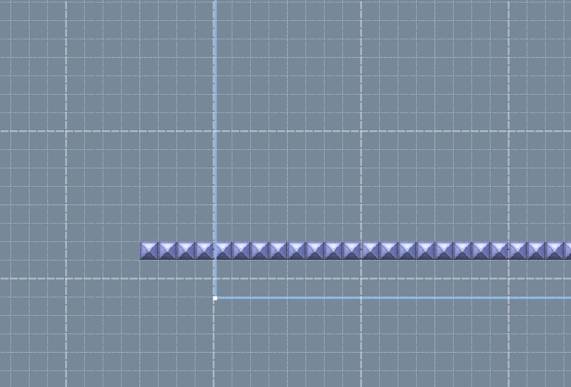

In Reggie, there's an option that lets you warp across the edges of the zones in each area.
However, you would have to mimmick the its set up as shown in 01-20 in NSMBW. That course is
the First Coin Battle Level, as pointed out by 9211tr.
It's... really hard and annoying to set up right. So I made an Area template that you can
download and use for your levels! The level only has one area with one zone set up for your
level.
In the zone, there are blocks that show how to properly warp across the edges if you were to
walk in a straight line.

This shows how to set up the warping across the edges. You just need to extend the ground about
4 tiles out of the zone like so.
There are a few things you need to know before using this.
-The Zone is set to "Scroll Bottom to Top". You can change
this to "Scroll Top to Bottom" if you want.
-You can delete the blocks at the bottom. They are just an
example.
-This works for New and Newer SMBW
-The Zone is set to "Y Tracking" only.
...It's best to keep it that way.
-The Zoom level is set to 1.
...It's also best to keep it that way.
-You can change the Y size of the zone. If you do, though,
I suggest you do from changing the Y size # itself.
-The Y Position needs to stay 481.
The X Position needs to stay 256.
Why? Because otherwise, the edge warping will be more like
edge teleportation. Also, some sprites might Glitch out or
act weird.
-Keep in mind that pretty much all sprites warp across the
stage edges as well.
Don't play it! It's really really bad! I was honestly
just testing the template, but then I got bored and
decided to make a level out of it. Oops!
_________________________
I need to make a signature...
It all starts like this. Ganon captured Link. Then Zelda found out that the triforce had 4 pieces. not 3. She went to the triforce and threw the 3rd shard (that is black) at it. the shard went in the middle. Then she punched it for its power and then there was a gigantic explosion. Everyone died but zelda and ganon and link. Ganon and Link started fighting. Athend, Ganon hit link to the ground. Ganon was about to end it when captain falcon came out of somewhere i mean nowhere and used falcon punch. Then he exploded and died. Zelda said "wow Link sucks." Link heard, got pissed, Transformed into Dark Link and exploded. Ganon was so shocked he died out of laughter. zelda almost had the same fate but the triforce which is now black and Purple aura copied Zelda's apperance and then gained 4 heads and a dragon tail. Its name is dragon zelda. zelda acted like she was all and powerful. dragon zelda charged at zelda and she hit the floor. She started crying alot. then toon link and young link came out of nowhere i mean somewhere and went beside zelda. they screamed "AHHHHHH!!!" and exploded. then they reformed to a toon female link with pink hair. fink. fink acted like she was all and powerful. but then dragon zelda charged at fink and she hit the floor. this time she was actually dead. Now everyone was dead but dragon zelda. Now she turns into a shiek with a bigger dragon tail. she teleported to a dimension with everything normal. because she can. then she looked for zelda. she found her, killed her instanly and became the new zelda.
However, you would have to mimmick the its set up as shown in 01-20 in NSMBW
Also, level 01-20.arc is the First Coin Battle Level in NSMBW. _________________________ Don't expect me to be very active here, since I have plans, and many other things in my life.
Oh yeah, forgot about that! I'll add that little note to the main post. _________________________
I need to make a signature...
It all starts like this. Ganon captured Link. Then Zelda found out that the triforce had 4 pieces. not 3. She went to the triforce and threw the 3rd shard (that is black) at it. the shard went in the middle. Then she punched it for its power and then there was a gigantic explosion. Everyone died but zelda and ganon and link. Ganon and Link started fighting. Athend, Ganon hit link to the ground. Ganon was about to end it when captain falcon came out of somewhere i mean nowhere and used falcon punch. Then he exploded and died. Zelda said "wow Link sucks." Link heard, got pissed, Transformed into Dark Link and exploded. Ganon was so shocked he died out of laughter. zelda almost had the same fate but the triforce which is now black and Purple aura copied Zelda's apperance and then gained 4 heads and a dragon tail. Its name is dragon zelda. zelda acted like she was all and powerful. dragon zelda charged at zelda and she hit the floor. She started crying alot. then toon link and young link came out of nowhere i mean somewhere and went beside zelda. they screamed "AHHHHHH!!!" and exploded. then they reformed to a toon female link with pink hair. fink. fink acted like she was all and powerful. but then dragon zelda charged at fink and she hit the floor. this time she was actually dead. Now everyone was dead but dragon zelda. Now she turns into a shiek with a bigger dragon tail. she teleported to a dimension with everything normal. because she can. then she looked for zelda. she found her, killed her instanly and became the new zelda.
He probably means a future level in a World 8. So, a level someone could make!
This goes nicely with rising lava. _________________________
I need to make a signature...
It all starts like this. Ganon captured Link. Then Zelda found out that the triforce had 4 pieces. not 3. She went to the triforce and threw the 3rd shard (that is black) at it. the shard went in the middle. Then she punched it for its power and then there was a gigantic explosion. Everyone died but zelda and ganon and link. Ganon and Link started fighting. Athend, Ganon hit link to the ground. Ganon was about to end it when captain falcon came out of somewhere i mean nowhere and used falcon punch. Then he exploded and died. Zelda said "wow Link sucks." Link heard, got pissed, Transformed into Dark Link and exploded. Ganon was so shocked he died out of laughter. zelda almost had the same fate but the triforce which is now black and Purple aura copied Zelda's apperance and then gained 4 heads and a dragon tail. Its name is dragon zelda. zelda acted like she was all and powerful. dragon zelda charged at zelda and she hit the floor. She started crying alot. then toon link and young link came out of nowhere i mean somewhere and went beside zelda. they screamed "AHHHHHH!!!" and exploded. then they reformed to a toon female link with pink hair. fink. fink acted like she was all and powerful. but then dragon zelda charged at fink and she hit the floor. this time she was actually dead. Now everyone was dead but dragon zelda. Now she turns into a shiek with a bigger dragon tail. she teleported to a dimension with everything normal. because she can. then she looked for zelda. she found her, killed her instanly and became the new zelda.
No, there's an actual level in World 8 that uses this. And it uses Rising lava as well.
I got what you're saying, but where is the level in World 8? _________________________ Don't expect me to be very active here, since I have plans, and many other things in my life.
Well if it's a NewerSMBW level, I would be surprised, because I thought he was referring to a level in World 8 of the original NSMBW, though. _________________________ Don't expect me to be very active here, since I have plans, and many other things in my life.
OK, but is the level you're talking about, is level "World 8-8" of NewerSMBW? _________________________ Don't expect me to be very active here, since I have plans, and many other things in my life.
NewerSMBW 08-08 doesn't have warping across edges. I've played it recently. It does have rising lava though.
NewSMBW's 08-06 also doesn't have warping across edges. I checked. It does have rising lava, though.
You're referring to 08-06 of New Super Mario Bros DS that has rising lava and warping across edges.
I'm late to answering this, aren't I? Sorry about that. _________________________
I need to make a signature...
It all starts like this. Ganon captured Link. Then Zelda found out that the triforce had 4 pieces. not 3. She went to the triforce and threw the 3rd shard (that is black) at it. the shard went in the middle. Then she punched it for its power and then there was a gigantic explosion. Everyone died but zelda and ganon and link. Ganon and Link started fighting. Athend, Ganon hit link to the ground. Ganon was about to end it when captain falcon came out of somewhere i mean nowhere and used falcon punch. Then he exploded and died. Zelda said "wow Link sucks." Link heard, got pissed, Transformed into Dark Link and exploded. Ganon was so shocked he died out of laughter. zelda almost had the same fate but the triforce which is now black and Purple aura copied Zelda's apperance and then gained 4 heads and a dragon tail. Its name is dragon zelda. zelda acted like she was all and powerful. dragon zelda charged at zelda and she hit the floor. She started crying alot. then toon link and young link came out of nowhere i mean somewhere and went beside zelda. they screamed "AHHHHHH!!!" and exploded. then they reformed to a toon female link with pink hair. fink. fink acted like she was all and powerful. but then dragon zelda charged at fink and she hit the floor. this time she was actually dead. Now everyone was dead but dragon zelda. Now she turns into a shiek with a bigger dragon tail. she teleported to a dimension with everything normal. because she can. then she looked for zelda. she found her, killed her instanly and became the new zelda.